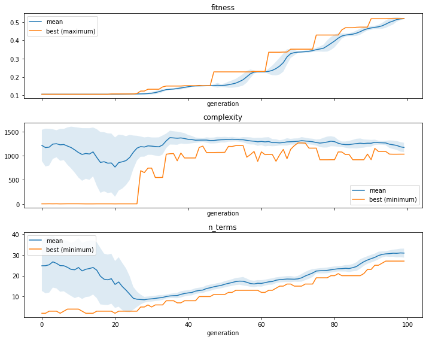
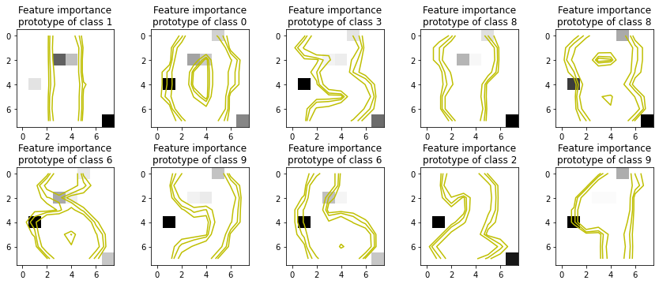
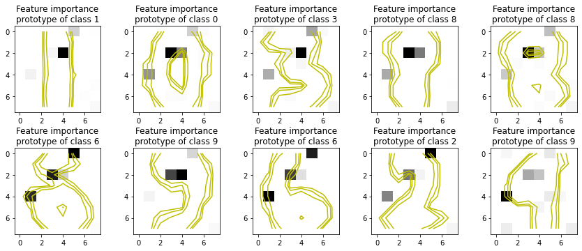

Interacting with ProtoDash¶
In this notebook we’ll combine the ProtoDash and the Partial Effects to obtain feature importances on the digits classifications task.
ProtoDash was proposed in Gurumoorthy, Karthik & Dhurandhar, Amit & Cecchi, Guillermo & Aggarwal, Charu. (2019). Efficient Data Representation by Selecting Prototypes with Importance Weights. 260-269. 10.1109/ICDM.2019.00036.
[1]:
import numpy as np
import pandas as pd
# automatically differentiable implementation of numpy
import jax.numpy as jnp # v0.2.13
import shap #0.34.0
from sklearn.metrics import classification_report
from sklearn import datasets
from sklearn.model_selection import train_test_split
from IPython.display import display
import matplotlib.pyplot as plt
from itea.classification import ITEA_classifier
from itea.inspection import *
from sklearn.preprocessing import OneHotEncoder
from aix360.algorithms.protodash import ProtodashExplainer #0.2.1
import warnings
warnings.filterwarnings(action='ignore', module=r'itea')
[2]:
digits_data = datasets.load_digits(n_class=10)
X, y = digits_data['data'], digits_data['target']
labels = digits_data['feature_names']
targets = digits_data['target_names']
X /= X.max(axis=1).reshape(-1, 1)
X_train, X_test, y_train, y_test = train_test_split(
X, y, test_size=0.33, random_state=42)
tfuncs = {
'id' : lambda x: x,
'sin': jnp.sin,
'cos': jnp.cos,
'tan': jnp.tan
}
clf = ITEA_classifier(
gens = 100,
popsize = 100,
max_terms = 40,
expolim = (0, 2),
verbose = 10,
tfuncs = tfuncs,
labels = labels,
simplify_method = None,
random_state = 42,
fit_kw = {'max_iter' : 5}
).fit(X_train, y_train)
final_itexpr = clf.bestsol_
final_itexpr.selected_features_
gen | smallest fitness | mean fitness | highest fitness | remaining time (s)
----------------------------------------------------------------------------
0 | 0.103907 | 0.104023 | 0.105569 | 10min6seg
10 | 0.105569 | 0.105569 | 0.105569 | 1min11seg
20 | 0.105569 | 0.107406 | 0.161264 | 2min43seg
30 | 0.161264 | 0.168412 | 0.201164 | 5min13seg
40 | 0.234414 | 0.274763 | 0.312552 | 6min22seg
50 | 0.325021 | 0.382643 | 0.426434 | 6min7seg
60 | 0.426434 | 0.485046 | 0.551122 | 5min12seg
70 | 0.551122 | 0.601355 | 0.634248 | 4min25seg
80 | 0.632585 | 0.634813 | 0.635910 | 2min54seg
90 | 0.637573 | 0.671771 | 0.684954 | 1min16seg
[2]:
array(['pixel_0_0', 'pixel_0_1', 'pixel_0_2', 'pixel_0_3', 'pixel_0_4',
'pixel_0_5', 'pixel_0_6', 'pixel_0_7', 'pixel_1_0', 'pixel_1_1',
'pixel_1_2', 'pixel_1_3', 'pixel_1_4', 'pixel_1_5', 'pixel_1_6',
'pixel_1_7', 'pixel_2_0', 'pixel_2_1', 'pixel_2_2', 'pixel_2_3',
'pixel_2_4', 'pixel_2_5', 'pixel_2_6', 'pixel_2_7', 'pixel_3_0',
'pixel_3_1', 'pixel_3_2', 'pixel_3_3', 'pixel_3_4', 'pixel_3_5',
'pixel_3_6', 'pixel_3_7', 'pixel_4_0', 'pixel_4_1', 'pixel_4_2',
'pixel_4_3', 'pixel_4_4', 'pixel_4_5', 'pixel_4_6', 'pixel_4_7',
'pixel_5_0', 'pixel_5_1', 'pixel_5_2', 'pixel_5_3', 'pixel_5_4',
'pixel_5_5', 'pixel_5_6', 'pixel_5_7', 'pixel_6_0', 'pixel_6_1',
'pixel_6_2', 'pixel_6_3', 'pixel_6_4', 'pixel_6_5', 'pixel_6_6',
'pixel_6_7', 'pixel_7_0', 'pixel_7_1', 'pixel_7_2', 'pixel_7_3',
'pixel_7_4', 'pixel_7_5', 'pixel_7_6', 'pixel_7_7'], dtype='<U9')
[3]:
print(classification_report(
y_test,
final_itexpr.predict(X_test),
target_names=[str(t) for t in targets]
))
precision recall f1-score support
0 0.72 0.80 0.76 55
1 0.67 0.58 0.62 55
2 0.48 0.83 0.61 52
3 0.69 0.61 0.65 56
4 0.78 0.80 0.79 64
5 0.69 0.55 0.61 73
6 0.79 0.88 0.83 57
7 0.67 0.58 0.62 62
8 0.50 0.33 0.40 52
9 0.66 0.71 0.68 68
accuracy 0.66 594
macro avg 0.67 0.67 0.66 594
weighted avg 0.67 0.66 0.66 594
We can use the ITEA_summarizer to inspect the convergence during the evolution. In the cell below, we’ll create 3 plots, one for the fitness (classification accuracy), one for the complexity (number of nodes if the IT expression was converted to a symbolic tree) and number of terms (number of IT terms of the solutions in the population for each generation).
[4]:
fig, ax = plt.subplots(3, 1, figsize=(10, 8), sharex=True)
summarizer = ITEA_summarizer(itea=clf).fit(X_train, y_train).plot_convergence(
data=['fitness', 'complexity', 'n_terms'],
ax=ax,
show=False
)
plt.tight_layout()
plt.show()

[5]:
# features are named pixel_x_y. Lets extract those coordinates and
# paint in a figure to show the selected features
selected_features = np.zeros((8, 8))
for feature_name, feature_importance in zip(
final_itexpr.selected_features_,
np.sum(final_itexpr.feature_importances_, axis=0)
):
x, y = feature_name[-3], feature_name[-1]
selected_features[int(x), int(y)] = feature_importance
fig, axs = plt.subplots(1, 1, figsize=(3,3))
axs.imshow(selected_features, cmap='gray_r')
axs.set_title(f"Selected features")
plt.tight_layout()
plt.show()
[6]:
onehot_encoder = OneHotEncoder(sparse=False)
onehot_encoded = onehot_encoder.fit_transform(
np.hstack( (X_train, y_train.reshape(-1, 1)) ) )
explainer = ProtodashExplainer()
# call protodash explainer. We'll select 10 prototypes
# S contains indices of the selected prototypes
# W contains importance weights associated with the selected prototypes
(W, S, _) = explainer.explain(onehot_encoded, onehot_encoded, m=10)
elementwise comparison failed; returning scalar instead, but in the future will perform elementwise comparison
elementwise comparison failed; returning scalar instead, but in the future will perform elementwise comparison
elementwise comparison failed; returning scalar instead, but in the future will perform elementwise comparison
elementwise comparison failed; returning scalar instead, but in the future will perform elementwise comparison
[7]:
from matplotlib import cm
fig, axs = plt.subplots(2, 5, figsize=(12,5))
# Showing 10 prototypes
for s, ax in zip(S, fig.axes):
ax.imshow(X_train[s].reshape(8, 8), cmap='gray_r')
ax.set_title(f"Prototype of class {y_train[s]}")
Z = X_train[s].reshape(8, 8)
levels = [0.1, 0.2, 0.4]
norm = cm.colors.Normalize(vmax=abs(Z).max(), vmin=-abs(Z).max())
cmap = cm.PRGn
cset2 = ax.contour(Z, levels, colors='y')
for c in cset2.collections:
c.set_linestyle('solid')
plt.tight_layout()
plt.show()
[8]:
it_explainer = ITExpr_explainer(
itexpr=final_itexpr,
tfuncs=tfuncs
).fit(X_train, y_train)
fig, axs = plt.subplots(2, 5, figsize=(12,5))
for s, ax in zip(S, fig.axes):
importances = it_explainer.average_partial_effects(X_train[s, :].reshape(1, -1))[y_train[s]]
ax.imshow(importances.reshape(8, 8), cmap='gray_r')
ax.set_title(f"Feature importance\nprototype of class {y_train[s]}")
Z = X_train[s].reshape(8, 8)
levels = [0.1, 0.2, 0.4]
norm = cm.colors.Normalize(vmax=abs(Z).max(), vmin=-abs(Z).max())
cmap = cm.PRGn
cset2 = ax.contour(Z, levels, colors='y')
for c in cset2.collections:
c.set_linestyle('solid')
plt.tight_layout()
plt.show()

[11]:
shap_explainer = shap.KernelExplainer(
final_itexpr.predict,
shap.sample(pd.DataFrame(X_train, columns=labels), 100)
)
fig, axs = plt.subplots(2, 5, figsize=(12,5))
for s, ax in zip(S, fig.axes):
importances = np.abs(shap_explainer.shap_values(
X_train[s, :].reshape(1, -1), silent=True, l1_reg='num_features(10)'))
ax.imshow(importances.reshape(8, 8), cmap='gray_r')
ax.set_title(f"Feature importance\nprototype of class {y_train[s]}")
Z = X_train[s].reshape(8, 8)
levels = [0.1, 0.2, 0.4]
norm = cm.colors.Normalize(vmax=abs(Z).max(), vmin=-abs(Z).max())
cmap = cm.PRGn
cset2 = ax.contour(Z, levels, colors='y')
for c in cset2.collections:
c.set_linestyle('solid')
plt.tight_layout()
plt.show()

[10]:
it_explainer = ITExpr_explainer(
itexpr=final_itexpr,
tfuncs=tfuncs
).fit(X_train, y_train)
fig, axs = plt.subplots(2, 5, figsize=(12,5))
for c, ax in zip(final_itexpr.classes_, fig.axes):
c_idx = np.array([i for i in range(len(y_train)) if y_train[i]==c])
importances = it_explainer.average_partial_effects(X_train[c_idx, :])[c]
ax.imshow(importances.reshape(8, 8), cmap='gray_r')
ax.set_title(f"Feature importance\nprototype of class {c}")
Z = X_train[c_idx, :].mean(axis=0).reshape(8, 8)
levels = [0.1, 0.2, 0.4]
norm = cm.colors.Normalize(vmax=abs(Z).max(), vmin=-abs(Z).max())
cmap = cm.PRGn
cset2 = ax.contour(Z, levels, colors='y')
for c in cset2.collections:
c.set_linestyle('solid')
plt.tight_layout()
plt.show()
[ ]: